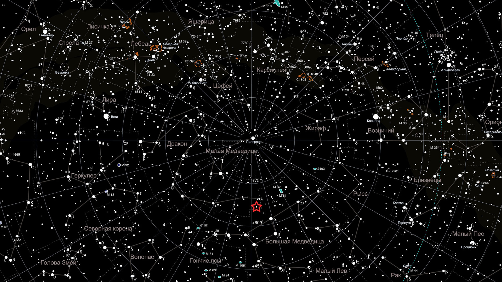

Созвездия ночного неба
Добро пожаловать на наш сайт, посвящённый самым известным созвездиям ночного неба. Здесь вы найдёте информацию о пяти самых ярких и узнаваемых созвездиях, которые можно наблюдать невооружённым глазом.
Созвездия - это группы звёзд, образующие определённые фигуры на небе. С древних времён люди давали им названия, связанные с мифами и легендами. Сегодня астрономы выделяют 88 официальных созвездий, покрывающих всю небесную сферу.
Выберите интересующее вас созвездие в меню слева, чтобы узнать о нём больше.
